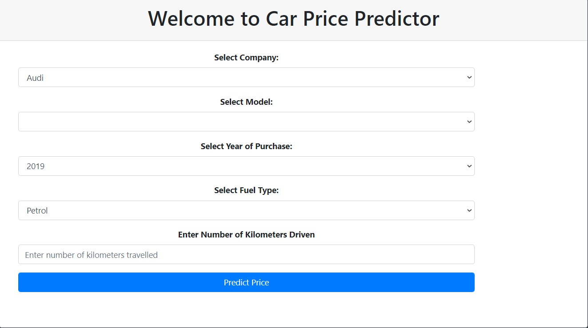
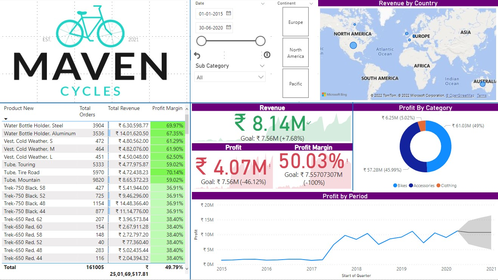
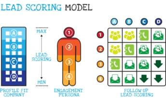

Google Certified Data Analyst with good experience in cutting edge technology of Data Science, passionate about solving
problems by building models which can detect and fix problems. Good grip on Data Science & Business Intelligence tools
:Python, SQL, R Programming, SAS, Microsoft Power BI, MS-Excel and Tableau. Seeking to leverage data analytical skills to improve corporate
performance as a data analyst
An e-commerce company needs help in understanding which factors are causing inventory losses.
Using 3 years of data to get insights. An analysis is to find out which factors are responsible for company's losses
and what are the profit causing products with various insights and market basket analysis.

A car price prediction application to find out how much value it bears while purchasing or selling a car considering various data features.
App: https://carprice-predictor-api.herokuapp.com/

A Power BI report on Maven Cycles showing various insights and providing the key influences for the company

An educational company needs help in finding out good leads which can convert into potential customers. A logistic regression model built upon the data to identify the features to be focussed while finding out the potential customers.

An analysis on a data of 100 movies to explore various aspects of data and finding out some interesting insights in it

A Linear Regression model with Exploratory Data Analysis to understand the demand dynamics for new market of a Bike Sharing Transportation Company.